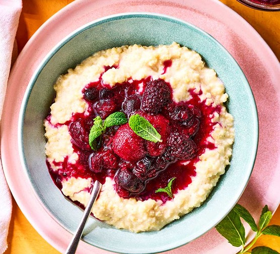

Warm Berry Compote

Homepage
Description
This berry compote is made in a slow cooker with frozen berries and orange
juice. It's a yummy dessert by itself or over ice cream.
Ingredients
- 6 cups frozen mixed berries
- 1/2 cup white sugar
- 1/4 cup orange juice
- 1 1/2 tablespoons finely grated orange zest
- 2 tablespoons cornstarch
- 2 tablespoons water
Directions
-
Stir frozen berries, orange juice, sugar and orange zest together in a
slow cooker. Cover and cook on High until bubbling, about 1 1/2
hours
-
Stir cornstarch and water together in a cup until fully dissolved. Stir
into berry mixture. Cover again and cook until thickened, 5-10 minutes.
Serve warm or at room temperature